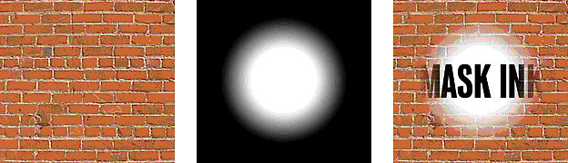

Using Director > Sprites > Using sprite inks > Using Mask ink to create transparency effects
Using Director > Sprites > Using sprite inks > Using Mask ink to create transparency effects |
Using Mask ink to create transparency effects
To reveal or tint certain parts of a sprite, you use Mask ink. Mask ink lets you define a mask cast member, which controls the degree of transparency for parts of a sprite.

The orignal cast member, its mask, and the sprite with mask ink applied.
Black areas of a mask cast member make the sprite completely opaque in those areas, and white areas make it completely transparent (invisible). Colors between black and white are more or less transparent; darker colors are more opaque.
When creating a bitmap mask for a sprite, use a grayscale palette if the mask cast member is an 8-bit (or less) image. An 8-bit mask affects only the transparency of the sprite and does not affect the color. Director ignores the palette of mask cast members that are less than 32-bit images; using a grayscale palette lets you view the mask in a meaningful way. If your mask cast member is a 32-bit image, the colors of the mask tint the sprite's colors.
If you do not need variable levels of opacity, use a 1-bit mask cast member to conserve memory and disk space.
There are many ways to use Mask ink, but the following procedure explains the most basic method.
To use Mask ink:
1 |
Decide which cast member you want to mask. |
The cast member can be a bitmap of any depth. |
|
2 |
In the next position in the same cast, create a duplicate of the cast member to serve as the mask. |
The mask cast member can actually be any image, but a duplicate of the original is usually the most useful. |
|
3 |
Edit the mask cast member in the Paint window or any image editor. |
Black areas of the mask make the sprite completely opaque in those areas, and white areas make it completely transparent (invisible). |
|
4 |
Drag the original cast member to the Stage or Score to create a sprite. |
5 |
Make sure the new sprite is selected and choose Mask ink from the Ink pop-up menu in the Sprite tab of the Property Inspector. |
Only the parts of the sprite revealed by the mask are visible on the Stage. |
|